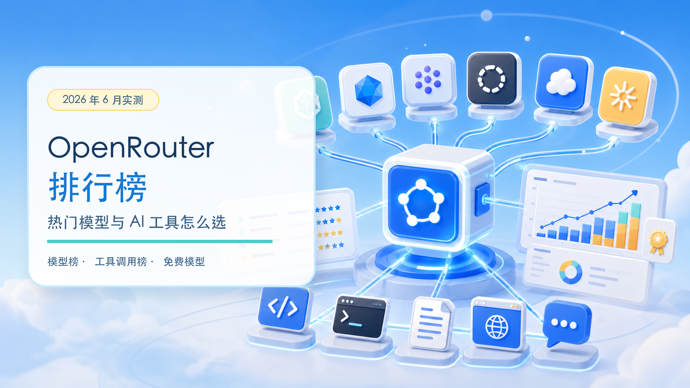
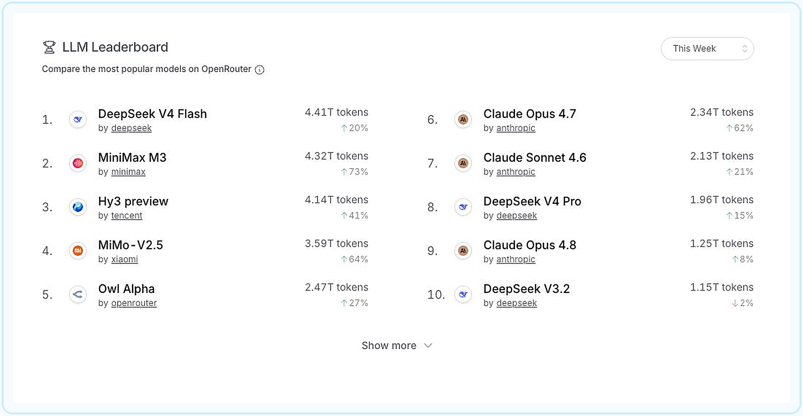
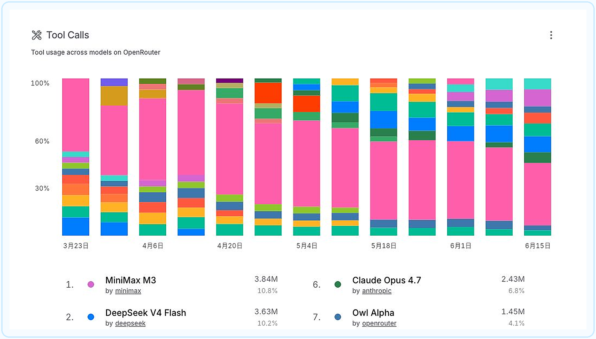
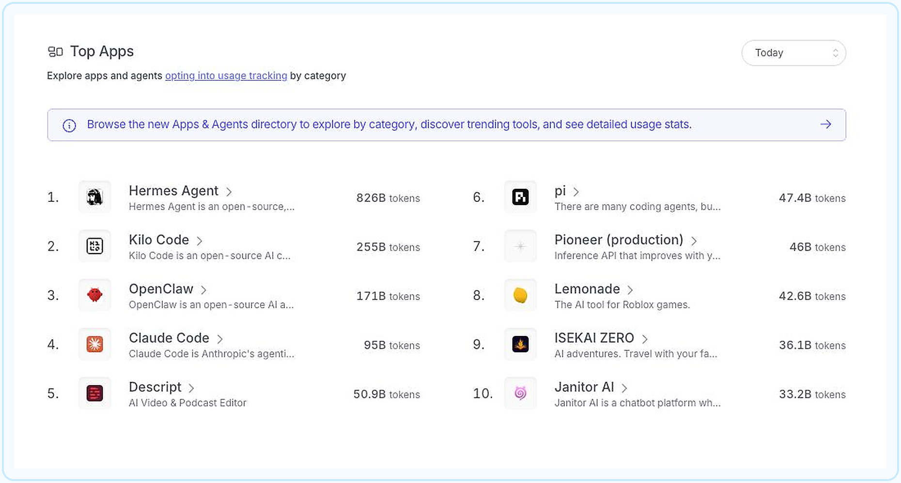
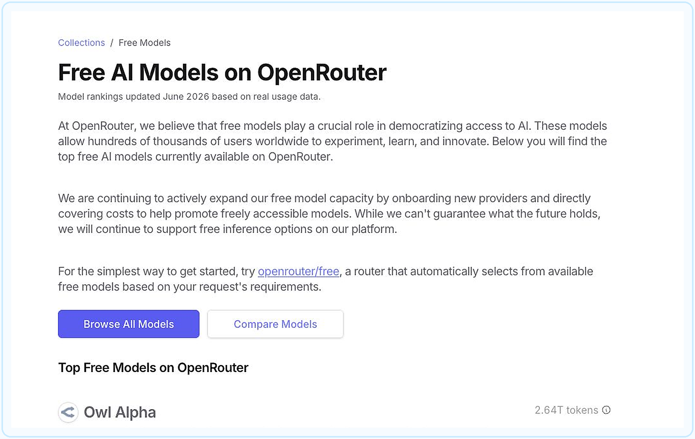

OpenRouter 排行榜：热门模型和工具怎么选
header.png

不知道该用哪个 AI？先看真实使用量，再按任务挑模型
技趣星球 · 用技术创造乐趣。
现在的 AI 模型实在太多了。
DeepSeek、Claude、MiniMax、MiMo、Gemini……名字越看越熟，真到选择时，还是容易犯难。
OpenRouter 的排行榜提供了另一个观察角度：不只看厂商怎么宣传，还看大量真实请求最后流向了哪些模型和工具。
我在 2026 年 6 月 15 日打开了 OpenRouter 排行榜，把当前模型榜、工具调用榜和应用榜截了下来。
先提醒一句：榜单变化很快。本文记录的是截图当天的数据，后续请以官网实时页面为准。
OpenRouter 像一个「AI 模型总插座」
平时使用 AI，往往要分别注册不同平台。
换模型时，又要重新处理账号、余额和接口配置。
OpenRouter 做的事情，可以理解成一个「AI 模型总插座」：
- 一个网站里查看和试用不同厂商的模型
- 用一套接口切换多个模型
- 比较模型价格、上下文长度和能力
- 把同一个模型请求交给不同服务商处理
- 为聊天工具、编程工具和 AI 助手提供模型通道
它本身不是一个新的大模型，更像模型与工具之间的中转站。
普通人可以直接使用它的 Chat 页面。开发者则可以把 OpenRouter 接到编程工具、聊天前端或自己的 App 中。
难度：⭐⭐
排行榜到底在排什么
OpenRouter 页面最上方的彩色柱状图，展示各模型每周处理的 Token 数量。
你可以把 Token 理解成 AI 读写的「文字小颗粒」。数量越大，说明这个模型通过 OpenRouter 处理的内容越多。
但要注意：
使用量高，不等于模型质量绝对第一。
排名还会受到价格、免费活动、响应速度、工具接入量和新模型热度影响。
所以这份榜单更像「真实使用热度榜」，不是考试分数榜。
本周热门模型：国产模型占了四个前排
model-leaderboard.png

截至 2026 年 6 月 15 日，页面选择的是 This Week。模型使用量前十如下：
这份排名里有三个明显信号。
1. 价格和速度正在影响真实选择
DeepSeek V4 Flash 排在第一。
MiniMax M3、Hy3 preview 和 MiMo-V2.5 紧随其后，而且周增长都很快。
这说明大量调用并没有只流向最贵的模型。对批量写作、编程代理和自动化任务来说，够用、便宜、速度快往往比单次测试分数更重要。
2. Claude 仍是工具和复杂任务的重要选择
Claude Opus 4.7、Claude Sonnet 4.6 和 Claude Opus 4.8 都进入前十。
它们的总量不是最高，但同时出现在模型榜、工具调用榜和 Claude Code 等应用里。
这类模型更适合复杂代码修改、长文档处理和多步骤任务。是否值得用，要看任务难度，而不是只看总排名。
3. 新模型的短期涨幅值得观察
MiniMax M3 一周增长 73%，MiMo-V2.5 增长 64%，Claude Opus 4.7 增长 62%。
涨幅高说明它们正在被更多工具接入，或者正处于发布推广期。
但短期上涨不代表长期稳定。选择长期使用的模型，还要看价格是否变化、服务是否稳定，以及自己的任务结果。
工具调用榜，更接近 AI 助手的真实表现
tool-calls.png

普通聊天只需要模型回答文字。
AI 助手要真正做事，还需要调用搜索、文件、终端、浏览器或其他工具。
这就是排行榜里的 Tool Calls。
当前截图中，MiniMax M3 以 384 万次工具调用排在第一，DeepSeek V4 Flash 以 363 万次排在第二，腾讯 Hy3 preview 以 290 万次排在第三。
Claude Opus 4.7、Owl Alpha 和 Gemini 3 Flash Preview 也进入前列。
这份榜比总使用量更适合下面这些场景：
- 给 Cursor、Claude Code 等编程工具选模型
- 让 AI 搜索网页、读取文件或执行命令
- 搭建可以连续完成多步任务的 AI 助手
- 判断模型是否经常被用于自动化工作
不过，调用次数多仍不代表每次调用都成功。
真要给工具选模型，建议至少测试三件事：
- 会不会正确选择工具
- 工具执行失败后会不会调整
- 会不会在没确认时执行危险操作
你可以用这段任务测试不同模型：
请先阅读当前项目结构，不要修改文件。
然后告诉我：
1. 项目使用了什么技术
2. 启动命令是什么
3. 最可能出现问题的三个位置
4. 你准备调用哪些工具，以及每个工具的用途
在我确认前，不要执行修改和删除操作。热门 AI 工具：Agent 和编程工具最活跃
top-apps.png

OpenRouter 还统计了主动开启用量追踪的 Apps 和 Agents。
这里比较的是工具消耗的 Token 数量，不是安装人数或活跃用户数。
截图当天选择的是 Today。前十名是：
前四名，代表了三种热门工具路线
Hermes Agent：长期运行的通用助手
Hermes Agent 以 826B Tokens 排在第一，领先幅度很大。
它不只是回答一次问题。它会保留记忆、搜索网页、操作浏览器、调用子任务，还能定时执行工作。一次任务可能连续运行很多步，因此 Token 消耗会明显高于普通聊天。
Kilo Code 和 Claude Code：让 AI 直接进入代码库
Kilo Code 排在第二，Claude Code 排在第四。
这类工具会阅读多个文件、分析依赖、修改代码、运行测试，再根据报错继续调整。你只发了一句话，工具背后可能已经和模型往返了几十次。
Kilo Code 更偏多编辑器和多模型选择。Claude Code 则和 Claude 模型、命令行开发流程结合得更紧。
OpenClaw：从聊天窗口走向实际操作
OpenClaw 排在第三。它可以连接消息应用，让 AI 操作文件、浏览网页、执行命令或处理日常任务。
这代表另一种趋势：AI 不再只待在独立聊天网页里，而是进入我们平时使用的消息入口和电脑工具。
为什么 Agent 特别消耗 Token
一个普通聊天问题，通常是「你问一次，AI 回一次」。
Agent 的工作方式更像一个不断汇报进度的实习生：
读任务 → 查资料 → 选择工具 → 执行 → 查看结果 → 调整方案 → 再执行
每一步都可能产生新的模型请求。任务越长、读取的文件越多、失败重试越多，Token 消耗就越高。
所以 Top Apps 排名靠前，可能意味着工具使用频繁，也可能意味着单次任务很重。不能只凭 Token 数判断哪个工具更好。
普通人可以从这个榜单看什么
榜单可以帮你发现工具，但不能替你做最终选择。
安装前还要查看权限范围、数据会发给谁、使用什么模型，以及费用如何计算。涉及文件、终端、邮件或账号操作时，先用测试项目和非重要账号验证。
也要注意，这只是主动向 OpenRouter 提交用量信息的应用排名，不能代表全球所有 AI 工具的完整市场份额。
OpenRouter 确实有不少免费模型
free-models.png

OpenRouter 单独提供了一个 免费模型集合。
截图当天可以看到这些模型：
- Owl Alpha
- NVIDIA Nemotron 3 Ultra
- Poolside Laguna M.1
- Nex AGI Nex-N2-Pro
- NVIDIA Nemotron 3 Super
- OpenAI gpt-oss-120b
- Poolside Laguna XS.2
- OpenAI gpt-oss-20b
免费模型的输入和输出价格会显示为 $0/M Tokens。
如果不想自己挑，还可以使用 openrouter/free。它会根据任务要求，从当前可用的免费模型中自动选择。
免费模型适合做什么
- 第一次体验 OpenRouter
- 测试提示词和简单聊天
- 学习如何给工具配置模型
- 做不涉及隐私的小型演示
- 比较不同模型的回答风格
免费不等于没有限制
免费模型可能有请求次数和速度限制，也可能因为服务商调整而上下线。
部分免费模型还会注明：服务商可能记录输入和输出，用于改进模型。
所以不要把身份证、公司资料、未公开代码、客户信息等敏感内容直接交给免费模型。
正式工作也不要只依赖一个免费模型。更稳妥的做法是先用免费模型试流程，确认有价值后，再选择稳定的付费模型或服务商。
另外，页面访问、账号注册和具体模型是否可用，还会受到地区、网络状态和平台策略影响。遇到不可用时，以 OpenRouter 页面提示为准。
普通人怎么根据榜单选
不需要永远追着第一名跑。
先看自己的任务，再看对应榜单。
你也可以把需求交给 AI，让它帮你列测试方案：
我要在 OpenRouter 里选择一个模型。
我的任务是：【写作 / 编程 / 长文档 / 工具调用】
每月预算：【填写金额】
是否涉及敏感资料：【是 / 否】
我更看重：【速度 / 质量 / 价格 / 稳定性】
请给我三个候选模型，并设计同一组测试任务。
不要只按排行榜推荐，要说明每个选择的取舍。这份榜单最值得记住的事
- OpenRouter 是连接多个模型与 AI 工具的中转站
- 模型榜主要反映真实使用热度，不是绝对能力排名
- Tool Calls 榜更适合观察编程助手和 Agent 使用的模型
- Top Apps 显示 AI 编程工具和自动化助手正在消耗大量模型用量
- 免费模型适合体验和测试，但有额度、稳定性和隐私方面的限制
现在可以先打开 OpenRouter 免费模型集合，选一个不涉及隐私的小任务试试。
同一个任务换两个模型各做一次。你很快就会发现，适合自己的模型，比排行榜第一名更重要。
技趣星球 · 用技术创造乐趣。
数据来源：
榜单截图与数据记录时间：2026 年 6 月 15 日。